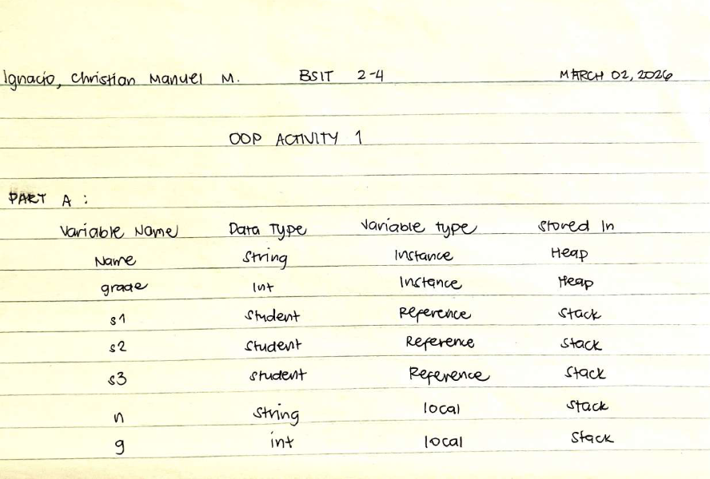
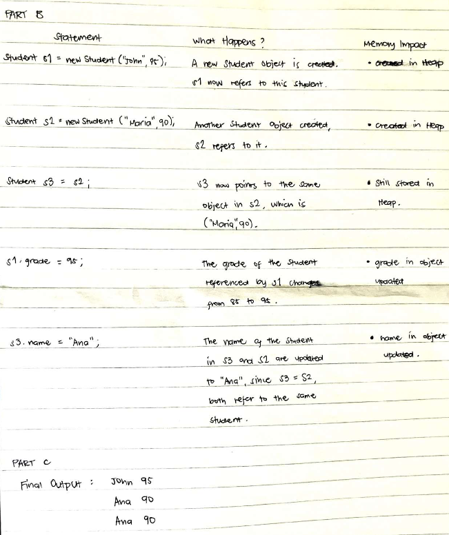

Java programs, code snippets, and explanations demonstrating problem-solving in Object-Oriented Programming.
Description: Introduction to Java variables, data types, and basic declarations.
Grade: 27/30 pts


Completing this activity really solidified
my understanding of how Java handles memory, especially the difference between primitive data types
and reference variables. When tracing the code step-by-step, it was fascinating to see that
assigning s3 = s2 didn't create a new object, but instead just pointed another
reference to the same memory location in the heap. That completely explained why modifying
s3 also changed s2! Writing out the tables helped me visualize the
behind-the-scenes mechanics of Object-Oriented Programming and how variables behave differently
based on their types.
Description: Utilizing Bitwise, Ternary, Assignment, Arithmetic, Relational, Logical, and Unary operators in Java.
Grade: 30/30 pts
// Bitwise operators
public class BitwiseOperator {
public static void main(String[] args) {
int a = 5; // 0101
int b = 10; // 1010
// true
System.out.println((a | b) == 15);
// 10
System.out.println(a ^ 15);
// false
System.out.println((a & b) > 0);
// 15
System.out.println(a | b);
}
}
// Ternary operators
public class TernaryOperator {
public static void main(String[] args) {
int a = 20;
int b = 15;
System.out.println((a > b) ? true : false);
System.out.println((a < b) ? true : false);
int c = 5;
int d = 10;
System.out.println((c + d > 10) ? 25 : 0);
System.out.println((c * 3 == 15) ? 30 : 0);
}
}
// Assignment operators
public class AssignmentOperators {
public static void main(String[] args) {
int add = 100;
add += 20;
System.out.println("Addition: " + add);
int sub = 100;
sub -= 30;
System.out.println("Subtraction: " + sub);
int mul = 12;
mul *= 12;
System.out.println("Multiplication: " + mul);
int div = 64;
div /= 4;
System.out.println("Division: " + div);
}
}public class Part2 {
public static void main(String[] args) {
// 1 - tricky increment (number)
int a = 2;
int result1 = a++ + ++a;
System.out.println(result1);
// 2 - arithmetic (number)
int b = 20;
int result2 = b / 4;
System.out.println(result2);
// 3 - relational (boolean)
int c = 15;
System.out.println(c > 10);
// 4 - logical (boolean)
boolean d = true;
System.out.println(d && false);
// 5 - assignment (number)
int e = 5;
e += 10;
System.out.println(e);
// 6 - bitwise (number)
int f = 3;
System.out.println(f << 2);
}
}This was my first time actually coding in
Java. I realized that it's so similar to C programming language that we used last school year for
Computer Programming 1 and 2. There are differences, sure, but I think I can get the hang of it in
no time, hopefully.Operators were tricky, especially the bitwise and the increment ones.
The a++ + ++a part really made my head hurt trying to
trace the values on paper. I learned that the computer follows a strict order of operations, just
like in math. The ternary operator ? : is actually pretty cool though, it's like a
shortcut for an if-else statement. I definitely need more practice with these, but getting all 6
outputs right felt like solving a puzzle.
Description: A Java program enforcing withdrawal limits and simulating basic ATM
operations using Scanner, conditional statements, and loops.
Grade: 27/30 pts
import java.util.Scanner;
public class ATMWithdrawalLimit {
public static void main(String[] args) {
try (Scanner amount = new Scanner(System.in)){
int initBalance = 9000;
int choice;
do{
System.out.println("\n=== ATM MENU ===");
System.out.println("1. Check Balance");
System.out.println("2. Deposit");
System.out.println("3. Withdraw");
System.out.println("4. Exit");
System.out.print("Enter your choice: ");
choice = amount.nextInt();
switch(choice){
case 1:
System.out.println("Your current balance is: " + initBalance);
break;
case 2:
System.out.print("Enter the amount to deposit: ");
int depositAmount = amount.nextInt();
initBalance += depositAmount;
System.out.println("Deposit successful. Your new balance is: " + initBalance);
break;
case 3:
System.out.print("Enter the amount to withdraw: ");
int withdrawAmount = amount.nextInt();
if(withdrawAmount > 3000){
System.out.println("Withdrawal Limit Exceeded.");
} else if(withdrawAmount > initBalance){
System.out.println("Insufficient balance. Your current balance is: " + initBalance);
} else {
initBalance -= withdrawAmount;
System.out.println("Withdrawal successful. Your new balance is: " + initBalance);
}
break;
case 4:
System.out.println("Thank you for using the ATM. Goodbye!");
break;
}
} while(choice != 4);
}
}
}This activity was so much fun because it felt like I was building a real app. I used a do-while loop since it's what I always use back when I was using C language to make the menu keep showing up until the user chooses to exit. Figuring out the logic for the withdrawal limit and checking if the balance was enough took me a few tries. I got a bunch of errors when I forgot to close the Scanner, but eventually, I got it working perfectly.
Description: A Java program simulating a student payment system using decision structures, loops, and user-defined validation to track tuition, discounts, and balances.
Grade: 27/30 pts
import java.util.Scanner;
public class StudentPaymentSystemIgnacio {
public static void main(String[] args) {
try (Scanner input = new Scanner(System.in)) {
int totTuition = 0;
int transCount = 0;
int choice;
int disCounter = 0;
System.out.print("\nEnter your Name: ");
String studentName = input.nextLine();
System.out.print("Enter your Student ID: ");
String studentID = input.nextLine();
System.out.print("Enter Total Tuition Fee: ");
totTuition = input.nextInt();
do{
System.out.println("\n=== PAYMENT MENU ===");
System.out.println("1. Pay Tuition");
System.out.println("2. Check Balance");
System.out.println("3. Apply Discount");
System.out.println("4. Exit");
System.out.print("Enter your choice: ");
choice = input.nextInt();
switch(choice){
case 1:
if(totTuition <= 0){
System.out.println("No Remaining Balance.");
transCount++;
} else {
System.out.print("Enter the amount to pay: ");
int paymentAmount = input.nextInt();
if(paymentAmount <= totTuition && paymentAmount > 0){
totTuition -= paymentAmount;
transCount++;
System.out.println("Payment successful. Remaining balance: " + totTuition);
if(totTuition == 0){
System.out.println("Your tuition is fully paid.");
}
} else {
System.out.println("Invalid Payment");
transCount++;
}
}
break;
case 2:
if(totTuition == 0){
System.out.println("No Remaining Balance.");
transCount++;
} else {
System.out.println("Your current balance is: " + totTuition);
transCount++;
}
break;
case 3:
if(disCounter < 1){
System.out.println("Select Student Type:");
System.out.println("1. Regular Student");
System.out.println("2. Scholar Student");
System.out.print("Enter your choice: ");
int studentType = input.nextInt();
if(studentType == 1){
System.out.println("No discount for Regular Students. Your current balance is: " + totTuition);
transCount++;
} else if(studentType == 2){
totTuition -= totTuition * 0.20;
System.out.println("Discount applied. Your new balance is: " + totTuition);
disCounter++;
transCount++;
} else {
System.out.println("Invalid Student Type");
transCount++;
}
} else {
System.out.println("Discount already applied. Your current balance is: " + totTuition);
transCount++;
}
break;
case 4:
System.out.println("\n=== Transaction Summary: ===");
System.out.println("Student Name: " + studentName);
System.out.println("Student ID: " + studentID);
System.out.println("Total Transactions: " + transCount);
System.out.println("Final Balance: " + totTuition);
System.out.println("\nThank you for using the Student Payment System. Goodbye!");
break;
default:
System.out.println("Invalid choice. Please try again.");
}
} while(choice != 4);
}
}
}This one was a step up from the ATM activity. Adding a counter for transactions and making sure the discount was only applied once for scholars was a bit challenging. I had to use nested if statements inside the switch cases. It really showed me how important it is to plan the logic before typing. I felt really proud when the final summary printed out all the correct details.
Description: A program designed to track personal expenses using multiple methods, parameter passing, and return types, while ensuring expenditures remain within a defined budget.
Grade: 27/30 pts
import java.util.Scanner;
public class ExpenseTrackerIgnacio {
//METHOD 1: DISPLAY TITLE
static void displayTitle() {
System.out.println("=== Welcome to the Expense Tracker! ===");
System.out.println("This program helps you track your expenses");
System.out.println("and manage your budget effectively.\n");
}
// METHOD 2: CALCULATE TOTAL EXPENSES
static double calculateTotalExpenses(double food, double transportation, double school, double entertainment, double other) {
double total = food + transportation + school + entertainment + other;
return total;
}
//METHOD 3: BUDGET TRACKER
static double budgetTracker(double totalExpenses, double budget) {
if (totalExpenses > budget) {
System.out.println("You have exceeded your budget. ");
} else {
System.out.println("You are within your budget.");
}
return budget - totalExpenses;
}
// METHOD 4: VIEW TOTAL EXPENSES
static void viewTotalExpenses(double food, double transportation, double school, double entertainment, double other, double totalExpenses, double budget) {
System.out.println("\n=== Total Expenses ===\n");
System.out.println("Food: " + food);
System.out.println("Transportation: " + transportation);
System.out.println("School: " + school);
System.out.println("Entertainment: " + entertainment);
System.out.println("Other: " + other);
System.out.println("\nYour total expenses so far is: " + totalExpenses);
System.out.println("Remaining budget: " + (budget - totalExpenses));
}
public static void main(String[] args) {
try (Scanner scan = new Scanner(System.in)){
int choice;
double food = 0;
double transportation = 0;
double school = 0;
double entertainment = 0;
double other = 0;
double expenseAmount = 0;
double totalExpenses = 0;
double budget = 0;
double remainingBudget = 0;
// DISPLAY TITLE METHOD
displayTitle();
System.out.print("Enter your monthly budget: ");
budget = scan.nextDouble();
do {
System.out.println("\n=== Main Menu ===");
System.out.println("1. Add an Expense");
System.out.println("2. Budget Tracker");
System.out.println("3. View Total Expenses");
System.out.println("4. Exit");
System.out.print("Enter your choice: ");
choice = scan.nextInt();
switch (choice) {
case 1:
System.out.println("\nSelect Expense Category:");
System.out.println("1. Food");
System.out.println("2. Transportation");
System.out.println("3. School");
System.out.println("4. Entertainment");
System.out.println("5. Other");
System.out.print("Enter your choice: ");
int expenseChoice = scan.nextInt();
switch (expenseChoice) {
case 1:
System.out.print("Enter the expense amount: ");
expenseAmount = scan.nextDouble();
System.out.println("Food Expense: " + expenseAmount);
food += expenseAmount;
break;
case 2:
System.out.print("Enter the expense amount: ");
expenseAmount = scan.nextDouble();
System.out.println("Transportation Expense: " + expenseAmount);
transportation += expenseAmount;
break;
case 3:
System.out.print("Enter the expense amount: ");
expenseAmount = scan.nextDouble();
System.out.println("School Expense: " + expenseAmount);
school += expenseAmount;
break;
case 4:
System.out.print("Enter the expense amount: ");
expenseAmount = scan.nextDouble();
System.out.println("Entertainment Expense: " + expenseAmount);
entertainment += expenseAmount;
break;
case 5:
System.out.print("Enter the expense amount: ");
expenseAmount = scan.nextDouble();
System.out.println("Other Expense: " + expenseAmount);
other += expenseAmount;
break;
default:
System.out.println("Invalid category.");
}
// CALCULATE TOTAL EXPENSES METHOD
totalExpenses = calculateTotalExpenses(food, transportation, school, entertainment, other);
break;
case 2:
// BUDGET TRACKER METHOD
remainingBudget = budgetTracker(totalExpenses, budget);
if (remainingBudget < 0) {
System.out.println("You have exceeded by: " + (remainingBudget));
} else {
System.out.println("Remaining Budget: " + remainingBudget);
}
break;
case 3:
// VIEW TOTAL EXPENSES METHOD
viewTotalExpenses(food, transportation, school, entertainment, other, totalExpenses,budget);
break;
case 4:
System.out.println("\nThank you for using the Expense Tracker. Goodbye!");
break;
default:
System.out.println("\nInvalid choice. Please select a valid option.");
}
} while (choice != 4);
}
}
}Back when I was studying C, I always use functions to organize my programs. And I just figured out that Method is just another term for Function. Methods are cool because before this, all my code was just jammed into the main block, which made it super messy. Breaking the program into smaller pieces like calculateTotalExpenses() and budgetTracker() made it so much easier to read and debug.